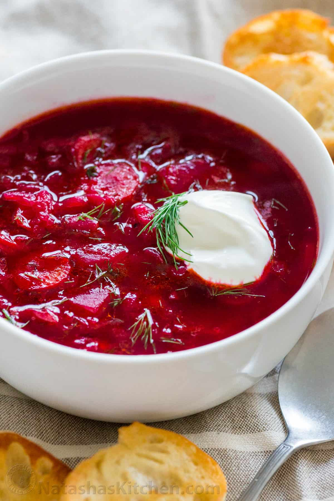

Borscht
This is a lovely dish from the heart of Ukraine!
Ingredients:
- 4 large beets
- 1 pound of veggies
- 1l of chicken stock
- 1 kielbasa
- 2 pounds of cabbage
- Water
Ingredients:
- Sautee all ingredients in butter
- Add broth and bring to a simmer
- Add water and cook until boiling
- Add dill
- Serve hot!!

If you enjoyed this recipe let me know in the comments and check out some of my other dishes!
Return to Home